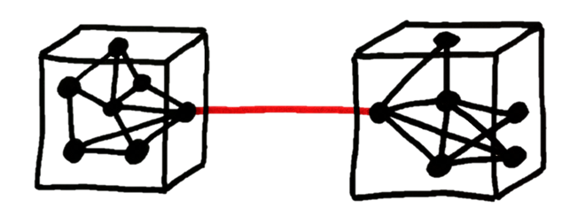

Why do we need clean code?
What can we do to have clean code?
Warning: these are my personal opinions :-)
Write code that looks familiar
Always follow the language conventions
Avoid deep-nesting
The more levels of nesting, the harder code is to read
function myFunc(foo, bar) {
if(foo) {
if(bar) {
// body of function
}
}
}
VS
function myFunc(foo, bar) {
if(!foo || !bar)
return;
// body of function
}
Keep variable names short but descriptive
Don't do too much in a single line

Design systems as a series of modules
Maintain high cohesion within modules

Write loosely coupled code
Write functions that required as little to run as possible
function func(manager) {
var id = manager.info.getId();
return store.get(id);
}
VS.
function func(id) {
return store.get(id);
}
Use globals sparingly - they are EVIL!
Global variables have no locality
Global variables have no access control
Global variables lead to namespace pollution
Write specs for your code
Comment all public APIs (e.g. javadoc)
/* Code Commenting */
// A comment should explain WHY a piece of code is like it is, not what it does.
// Don't summarize what a block of code does, rewrite it!
Iterate quickly
Refactor ruthlessly
Rewrite bravely
Source
Rouben Meschian
rmeschian@gmail.com